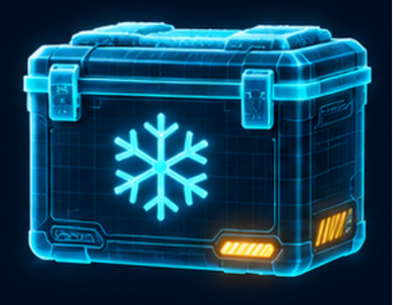
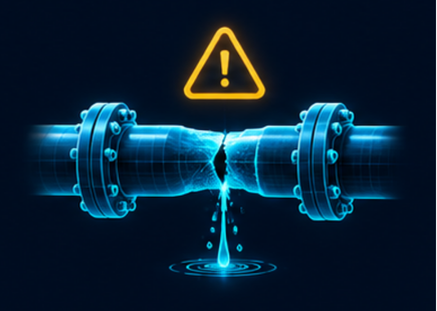
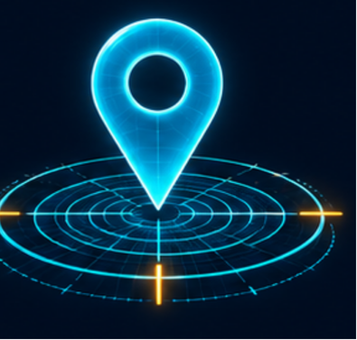

التحديات
قصص الحالات خيالية، وقد أُعدّت للاستقصاء في الصف.

نحافظ على البرودة
يجب أن تصل شحنة أدوية إلى عيادة بعيدة وأن تبقى باردة طوال الطريق. عند وصول الصندوق، يُظهر مقياس الحرارة أنّ كل شيء سليم، لكن ماذا حدث أثناء الرحلة؟
لقراءة القصة ←
نكتشف تسرّب المياه
لاحظ آفي أنّ فاتورة المياه في المدرسة ارتفعت، وأنّ تربة الحديقة رطبة حتى عندما يكون الريّ متوقّفًا. كيف سيحدّد مكان التسرّب في أنبوب تحت الأرض؟
لقراءة القصة ←
نحافظ على النباتات
في دفيئة المدرسة تذبل بعض النباتات بينما تبقى أخرى نضرة. تحاول ميخال معرفة ما يحدث في أماكن مختلفة وفي أوقات مختلفة من اليوم.
لقراءة القصة ←
نرى من بعيد
بعد العاصفة أُغلقت بعض مسارات المحمية. تحتاج نوعا وفريق الحراس إلى فهم ما تغيّر، حتى في المناطق التي لا يستطيعون الوصول إليها بعد.
لقراءة القصة ←
نجد الطريق
وصلت مجموعة من المتنزّهين إلى مفترق سقطت فيه اللافتة. تحتاج المرشدة دانا إلى معرفة موقع المجموعة وأيّ طريق يناسب متابعة الرحلة.
لقراءة القصة ←نرسل رسالة
تأخّرت مجموعة من المتنزّهين في منطقة لا توجد فيها تغطية للهاتف. يحتاج روني إلى إبلاغ السائق والتأكّد من وصول الرسالة إلى الشخص الصحيح.
لقراءة القصة ←
نعيد استخدام المياه
تُسقى حديقة الأزهار في المدرسة، وفي نهاية اليوم تُسكب مياه بقيت في قوارير الشرب. يريد عمر والمعلّمة دراسة هذا الوضع وفهم إمكاناته.
لقراءة القصة ←
نفحص دون مخاطرة
تتجمّع المياه قرب ساحة اللعب. يحتاج ساعر، مسؤول الصيانة، إلى معرفة ما يسدّ قناة تصريف ضيّقة ومظلمة، من دون الدخول إليها.
لقراءة القصة ←